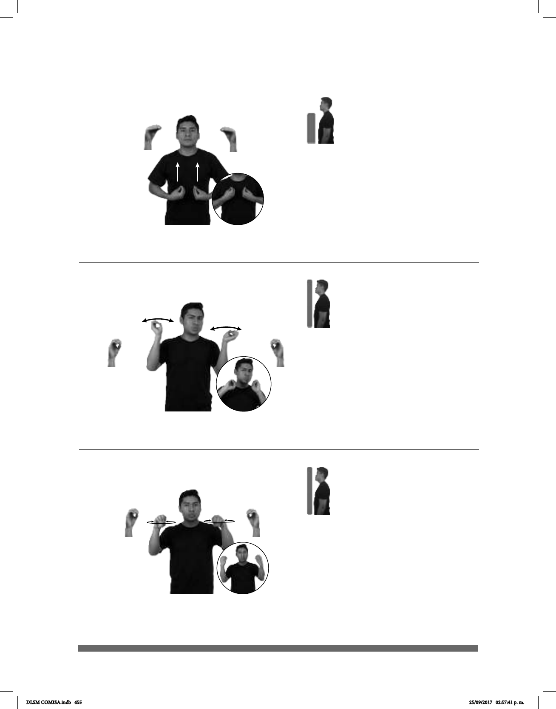

455
(O-83) Yo no fui (A)
Seña: SS
O.1
Las palmas inician
hacia fuera y terminan hacia adentro.
A la altura de los
hombros.
Movimiento: Los antebrazos giran y
cambian la orientación de las manos,
pasan de mostrar las palmas a mostrar
los dorsos.
: Labios
protuidos.
loc. v. No haber hecho
algo.
Seña: SS
O.1
Palmas oblicuas
hacia el centro y hacia fuera.
A la altura de los
hombros.
Movimiento: Las manos se agitan.
Ceño
fruncido, labios protuidos.
loc. v. No haber hecho
algo.
(O-83) Yo no fui (B)
__________________________________neg_
pro-YO-NO-FUI COMPUTADORA NO-SIRVE
Yo no fui quien descompuso la computadora.
pro-YO NO-FUI VIDRIO ROMPER++
Yo no fui el que rompió el vidrio.
Seña: SS
O.5
Palmas hacia arriba.
Las manos inician so-
bre el abdomen y se deslizan hacia
el pecho.
Movimiento: Recto.
1. v. intr. Habitar en un
determinado lugar o país. 2. sust. f.
Estado de actividad de un ser vivo
por el que se desarrolla, evoluciona
y se reproduce.
(O-82) Vivir
1
/ Vida
2
ESTADOS UNIDOS
allá
DIFÍCIL VIVIR
Vivir en Estados Unidos es difícil.
DLSM COMISA.indb 455 25/09/2017 02:57:41 p. m.